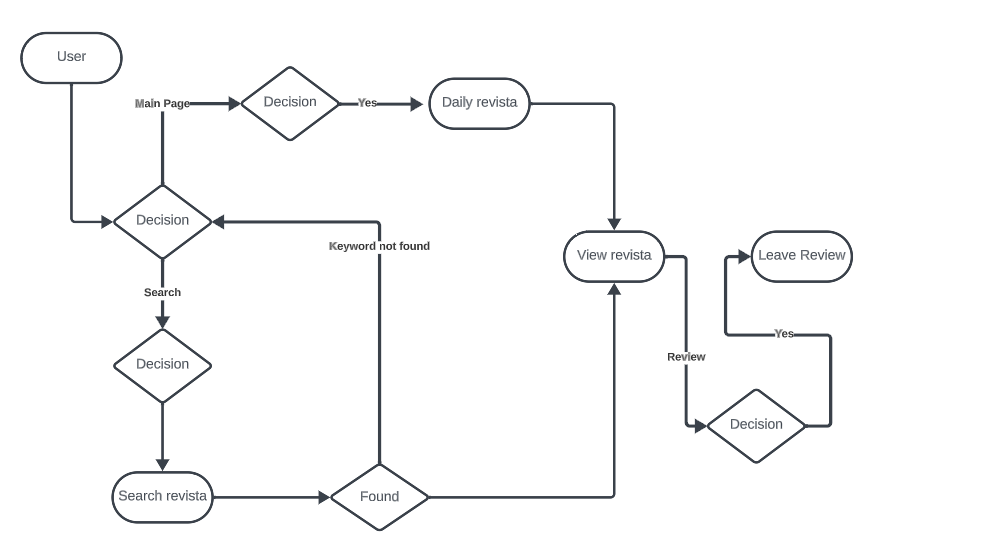

Descriere
Rolurile:
- Utilizator
- Admin
Entitati:
- Utilizatori:
Detalii despre utilizatori,nume, adresă de e-mail, parolă.
- Articole și Reviste: Informații despre reviste sau articole,titlu, autor, gen, descriere.
Conținutul revistelor, care poate fi stocat într-un format specific, cum ar fi imagini sau fișiere pdf.
- Categorii sau Genuri: O structură de categorii sau genuri pentru a organiza revistele și articolele.
- Recenzii și Evaluări: Opinii și evaluări ale revistelor sau articolelor lăsate de utilizatori.
- Autentificare și Securitate: Informații de autentificare și date de securitate pentru utilizatori, inclusiv parolele.
- Statistici și Analize: Informații despre trafic, numărul de vizualizări.
Procesele specifice aplicatiei:
- Căutare și Navigare: Procesul de căutare a revistelor sau a altor conținuturi, navigarea prin categorii și găsirea conținutului dorit.
- Autentificare: Procesul de înregistrare, autentificare și autorizare a utilizatorilor pentru a accesa conținutul premium sau pentru a gestiona propriile lor reviste.
- Citirea și Vizualizarea: Procesul de afișare și citire a revistelor sau a altor conținuturi, inclusiv funcționalități precum zoom, paginare și navigare rapidă.
- Evaluări și Recenzii: Procesul de lăsare a evaluărilor și recenziilor de către utilizatori pentru reviste și alte conținuturi.
- Analize și Statistici: Procesul de colectare a datelor pentru analize și rapoarte despre vizualizare a revistei.
- Administrația Platformei: Procesul de gestionare și administrare a platformei, inclusiv moderarea conținutului, gestionarea utilizatorilor și actualizarea site-ului.
Relatii:
- Utilizatorii (rol) pot crea "Recenzii și Evaluări" pentru "Articole și Reviste".
- "Articole și Reviste" pot fi încadrate în "Categorii sau Genuri".
- Procesul de "Căutare și Navigare" implică accesul la date despre "Articole și Reviste" și "Categorii sau Genuri".
- Procesul de "Citirea și Vizualizarea" presupune afișarea conținutului din "Articole și Reviste".
- "Evaluări și Recenzii" sunt legate de "Recenzii și Evaluări" pentru a permite utilizatorilor să lase opinii.
- Procesul de "Autentificare" utilizează datele de "Autentificare și Securitate" pentru a valida identitatea utilizatorilor.
- Adminii (rol) au drepturi de "Administrația Platformei", inclusiv moderarea conținutului și gestionarea utilizatorilor.
Componentele Principale:
- Frontend: Interfața vizuală a aplicației, care permite utilizatorilor să interacționeze cu conținutul și funcționalitățile.
- Backend: Logica aplicației și gestionarea bazei de date.
- Baza de Date: Stocarea și gestionarea datelor utilizatorilor, articolelor, recenziilor, etc.
- Servicii de Autentificare: Asigurarea autentificării și securității utilizatorilor.
- Interfața de Administrare: O interfață specială pentru admini pentru gestionarea conținutului și a utilizatorilor.
Descriere succintă a bazei de date:
- Tabelul Utilizatori: Cheie primară: ID_Utilizator, nume, adresă de e-mail, parolă, alte atribute relevante pentru detalii despre utilizatori
- Tabelul Articole_Reviste: Cheie primară: ID_Articol_Revista, titlu, autor, gen, descriere, conținut
- Tabelul Categorii_Genuri: Cheie primară: ID_Categorie_Gen, nume
- Tabelul Recenzii_Evaluări: Cheie primară: ID_Recenzie_Evaluare, ID_Utilizator, ID_Articol_Revista, opinie
- Tabelul Autentificare_Securitate: Cheie primară: ID_Autentificare_Securitate, ID_Utilizator, alte atribute legate de autentificare și securitate
- Tabelul Statistici_Analize: Cheie primară: ID_Statistica_Analiza, ID_Utilizator, alte atribute relevante pentru statistică sau analiză
Diagrama UML
